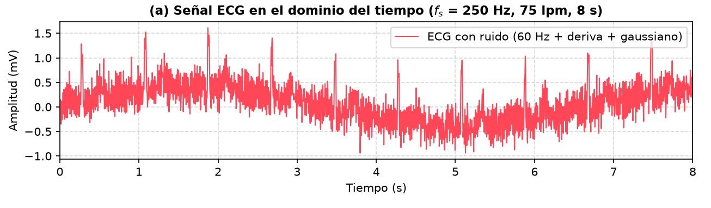
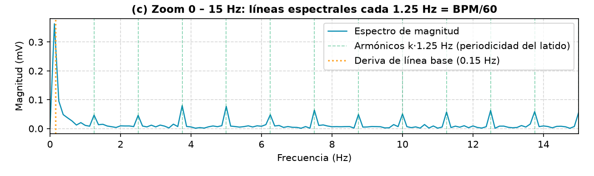

ConclusionesAprendizajes y relación con Teoría de Señales
Proyecto educativo · no es una herramienta de diagnóstico clínico
1 · Presentación del proyecto
El problema: medir el pulso a partir de una señal sucia
El electrocardiograma (ECG) registra la actividad eléctrica del corazón. Como señal tiene tres retos que son justo los temas del curso:
Es analógica: hay que muestrear y digitalizarla.
Banda limitada: la energía útil está entre 0.5 y ~100 Hz.
Llega contaminada por interferencias y ruido.
Quién contamina la señal
Deriva de línea base (< 0.5 Hz): respiración, movimiento.
Red eléctrica (60 Hz): una sinusoide estrecha.
Ruido muscular y térmico: banda ancha, alta frecuencia.
Pregunta guía: ¿cómo obtener la frecuencia cardíaca fiable a partir de esto?
Proyecto educativo · no es una herramienta de diagnóstico clínico
1 · Presentación del proyecto
Objetivo y solución desarrollada
Objetivo: generar o adquirir un ECG, representarlo en tiempo y frecuencia, filtrarlo y calcular la frecuencia cardíaca (BPM), integrando hardware, servidor y base de datos.
1 · Simulador web
HTML + CSS + JS. Generador P-Q-R-S-T, controles de BPM, amplitud y ruido, canvas en tiempo real y panel de teoría.
2 · Procesamiento
Filtros digitales y detector de picos R (Pan-Tompkins) en el navegador. FFT y filtrado de fase cero en Python (SciPy).
3 · Integración
Arduino + AD8232 por serial, servidor Node.js con flujo en tiempo real y MySQL (Sequelize) para usuarios e historial.
Proyecto educativo · no es una herramienta de diagnóstico clínico
1 · Presentación del proyecto
Cómo viaja una muestra, del electrodo a la pantalla
Arduino Uno + AD8232ADC de 10 bits en A0, líneas de texto S,512
USB serial 115200 baud
Servidor Node.jsExpress + serialport: ADC → mV, grupos de 40 ms
Sin sensor: ARDUINO_MODE=simulate (decirlo con claridad). Sin MySQL: simulador web + video de respaldo.
Proyecto educativo · no es una herramienta de diagnóstico clínico
3 · Análisis de señales
La señal y sus parámetros
Parámetro
Valor
Frecuencia de muestreo fs
250 Hz
Periodo de muestreo Ts = 1/fs
4 ms
Nyquist fs/2
125 Hz
Ventana de análisis (8 s)
N = 2000
Resolución Δf = fs/N
0.125 Hz
Ritmo de referencia
75 lpm → 1.25 Hz
ADC del Arduino
10 bits · ≈ 4.4 µV/cuenta
Modelo del ECG sintético
Cinco gaussianas (P, Q, R, S, T) dentro de cada periodo T = 60/BPM más ruido:
x(t) = Σ aᵢ·exp(−(t − μᵢ)² / 2σᵢ²) + η(t)
El ancho temporal fija el ancho de banda: σf = 1/(2π σt). El QRS (angosto) tiene frecuencias más altas que la onda T (ancha).
Tres orígenes: sintético, Arduino (ADC → mV) y ruido controlado.
Proyecto educativo · no es una herramienta de diagnóstico clínico
3 · Análisis de señales · dominio del tiempo
Qué se ve en el tiempo

ECG con ruido, 60 Hz y deriva · 75 lpm · 8 s
10 picos R (≈ 1.2 mV) cada 0.8 s: señal cuasi-periódica, T = 60/BPM.
La línea base «respira» entre ≈ −0.5 y +0.5 mV: deriva de 0.15 Hz.
El zumbido grueso es la red de 60 Hz más ruido gaussiano; tapa las ondas P y T.
Medida
Con ruido
Limpia
Mínimo (mV)
−0.939
−0.212
Máximo (mV)
1.611
1.187
Media (mV)
0.089
0.061
RMS (mV)
0.408
0.185
Proyecto educativo · no es una herramienta de diagnóstico clínico
3 · Análisis de señales · dominio de la frecuencia
Qué se ve en la FFT

Zoom 0–15 Hz: líneas cada 1.25 Hz = BPM/60Espectro 0–100 Hz: la red aparece como una línea en 60 Hz
Eje X: frecuencia (0 a fs/2). Eje Y: amplitud de la sinusoide equivalente (mV).
Componente
Frecuencia
Magnitud
Deriva de línea base
≈ 0.13 Hz
0.36 mV
Fundamental (75 lpm)
1.25 Hz
0.05 mV
Armónicos más altos
3.75 y 5.0 Hz
0.08 mV
Red eléctrica
60 Hz
0.26 mV
La fundamental no es la línea más alta. El QRS es angosto (~25 ms) y reparte su energía en muchos armónicos. El BPM sale de la separación entre líneas: medido en la FFT, 1.250 Hz → 75.0 lpm.
Proyecto educativo · no es una herramienta de diagnóstico clínico
3 · Análisis de señales · ruido y degradación
Cada interferencia vive en una zona distinta del espectro
Perturbación
Parámetros del modelo
Aspecto en el espectro
Cómo se combate
Deriva de línea base
0.40 mV · 0.15 Hz
Máximo muy cerca de 0 Hz
Pasa-altas 0.5 Hz
Red eléctrica
0.25 mV · 60 Hz
Una sola línea, muy angosta
Notch en 60 Hz
Ruido gaussiano / muscular
σ = 0.15 mV
Piso parejo en todas las frecuencias
Pasa-bajas 40 Hz (atenúa lo de alta frecuencia)
Una sinusoide pura ocupa una frecuencia: por eso los 60 Hz son una línea. El ruido blanco ocupa todas: por eso eleva el piso. Mirar el espectro permite elegir cada filtro con criterio en vez de probar a ciegas.
Proyecto educativo · no es una herramienta de diagnóstico clínico
3 · Análisis de señales · procesamiento
Tres filtros digitales, tres ecuaciones en diferencias
En el navegador son causales (solo muestras pasadas: sirven en tiempo real). En Python se usa filtfilt (Butterworth 2.º orden, fase cero): no distorsiona la fase, pero solo sirve fuera de línea.
Proyecto educativo · no es una herramienta de diagnóstico clínico
3 · Análisis de señales · procesamiento
De la señal al BPM: detector de QRS (Pan-Tompkins)
1 · Pasa-banda5–15 Hz: deja el QRS
2 · Derivada5 puntos: resalta la pendiente
3 · Al cuadradotodo positivo, pesa lo grande
4 · Integraciónventana móvil de 150 ms
5 · Umbraladaptativo entre ruido y señal
Del latido al BPM
BPM = 60 / T_RR f = BPM / 60 (Hz)
Se usa la mediana de los últimos 5 intervalos RR, así un latido perdido o falso no arruina la medida. Ejemplo: RR = 0.8 s → 75 lpm → 1.25 Hz.
Dos detalles de ingeniería
El pico R se localiza como el máximo del pasa-banda en los 200 ms previos: el máximo de la señal integrada «baila» ±30 ms.
Mientras se calibra (≈ 2 s + 2 latidos) se muestra «--» en vez de inventar un valor.
Proyecto educativo · no es una herramienta de diagnóstico clínico
4 · Resultados y validación
Resultado: la señal limpia conserva el latido
Cruda (rosa) vs. filtrada (verde): HP 0.5 Hz + notch 60 Hz + LP 40 Hz
Espectros: desaparecen la deriva y los 60 Hz
RMS del error respecto a la señal limpia
0.368 → 0.083 mV
≈ 4.4 veces menos error tras filtrar.
Compromiso: el pico R baja de ≈ 1.2–1.6 mV a ≈ 1.0 mV. Limpiar ruido cuesta algo de la forma de onda.
Proyecto educativo · no es una herramienta de diagnóstico clínico
4 · Resultados y validación
Cómo comprobamos que funciona
24 pruebas automáticas (npm test)
5 del puente Arduino: protocolo, comandos válidos e inválidos, conversión a mV, electrodos sueltos.
9 de la API: registro, login, bcrypt, inyección SQL, permisos, SSE, historial, logout.
10 de DSP: precisión del detector, continuidad del generador y respuesta de los filtros.
npm run db:check verifica Sequelize ↔ MySQL. La FFT recupera 1.250 Hz → 75.0 lpm.
BPM medido por el detector (30 s de señal)
BPM real
Normal
Ruido 30 % + 60 Hz + deriva
Amplitud 0.5×
40
40
40
40
60
60
60
60
75
75
75
75
90
90
90
90
120
120
120
120
150
150
150
150
180
181
181
181
Proyecto educativo · no es una herramienta de diagnóstico clínico
4 · Resultados y validación
Alcances y limitaciones
Alcances
Cubre todo el ciclo de una señal: generación o adquisición, muestreo, visualización, FFT, filtrado y BPM.
Hardware, servidor, base de datos y web sincronizados en tiempo real.
Seguridad básica: bcrypt, cookie httpOnly, consultas parametrizadas, límite de intentos, lista cerrada de comandos.
Demo web (Vercel) que abre desde cualquier celular, sin instalar nada.
Limitaciones (las decimos nosotros primero)
La señal principal es sintética; la real exige el AD8232 con electrodos.
Con relación señal/ruido muy baja (amplitud 0.3× con ruido 30 %) el detector puede fallar.
Filtros del navegador causales y de bajo orden: atenúan menos y retrasan la fase.
El ruido gaussiano no es ruido muscular real. Un solo canal, ADC de 10 bits (≈ 4.4 µV por cuenta).
No es un dispositivo médico ni sirve para diagnosticar.
Mejoras: validar contra registros reales (MIT-BIH, PhysioNet), filtros de mayor orden (IIR vs. FIR), más derivaciones y variabilidad de la frecuencia cardíaca.
Proyecto educativo · no es una herramienta de diagnóstico clínico
5 · Conclusiones
Lo que aprendimos y cómo se conecta con la teoría
Un ECG reúne casi todo el curso: señal analógica, muestreo, ruido, Fourier y filtros.
La FFT vuelve visible lo que en el tiempo está mezclado: cada interferencia ocupa su zona del espectro.
Elegir fs importa: con 250 Hz no hay aliasing; con muy pocas muestras sí.
Filtrar es un compromiso entre limpiar y deformar (causal vs. fase cero).
Llevar la teoría a un sistema completo obliga a decidir y a validar con pruebas: encontramos y corregimos fallos del detector gracias a ellas.
Conceptos de Teoría de Señales usados
Señales continuas y discretasMuestreo y NyquistCuantización (ADC)Periodicidad: T = 60/BPMFourier y FFTResolución espectral ΔfFuga espectralRuido e interferenciaFiltros pasa-altas / bajas / notchEcuaciones en diferencias (LTI)Detección de eventos
Proyecto educativo · no es una herramienta de diagnóstico clínico
Referencias
Fuentes técnicas y académicas
Pan, J., & Tompkins, W. J. (1985). A real-time QRS detection algorithm. IEEE Transactions on Biomedical Engineering, BME-32(3), 230–236.
McSharry, P. E., Clifford, G. D., Tarassenko, L., & Smith, L. A. (2003). A dynamical model for generating synthetic electrocardiogram signals. IEEE Transactions on Biomedical Engineering, 50(3), 289–294.
Oppenheim, A. V., & Schafer, R. W. (2010). Discrete-Time Signal Processing (3rd ed.). Pearson.
Cooley, J. W., & Tukey, J. W. (1965). An algorithm for the machine calculation of complex Fourier series. Mathematics of Computation, 19(90), 297–301.
Moody, G. B., & Mark, R. G. (2001). The impact of the MIT-BIH Arrhythmia Database. IEEE Engineering in Medicine and Biology Magazine, 20(3), 45–50.
Analog Devices. AD8232: Single-Lead, Heart Rate Monitor Front End (hoja de datos).